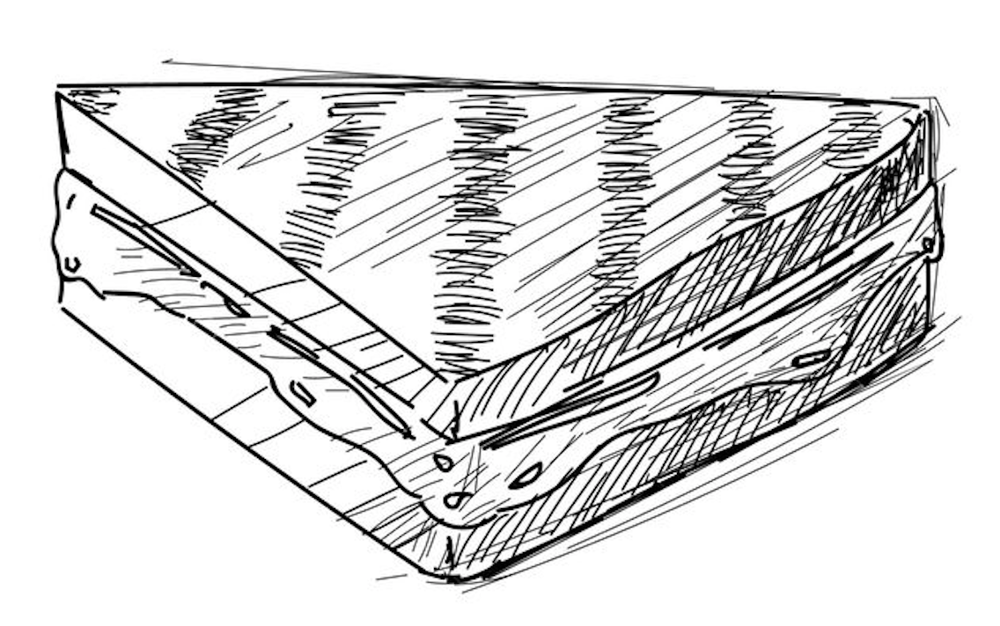
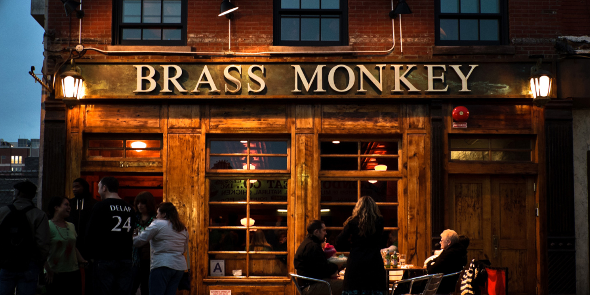

Ingredients
for 4 servings
TOMATO SOUP
GRILLED CHEESE BOWL
CROUTON FRIES

Prep
1) Make the tomato soup: melt the butter in a large pot over medium-high heat. Add the onion and stir for 6-8 minutes, until the onions just start to brown.
2)Add the garlic and stir for another minute. Stir in the crushed tomatoes, chicken broth, heavy cream, salt, and pepper.
3)Bring the soup to a boil, then reduce the heat to low, cover, and simmer for 15 minutes.
4)Remove the soup from heat and transfer to a blender. Remove vent so that steam can escape. Blend for 2 minutes, until the soup is smooth and thick. Alternatively, leave the soup in the pot and use an immersion blender.
5)Make the grilled cheese bowl: cut the crusts off the bread and set aside in a medium bowl.
6)Arrange the bread slices into 3 lines: a line of 5, a line of 4, and a line of 2.
7)In a small bowl, combine the melted butter and garlic and use a brush to spread the mixture over each piece of bread.
8)Preheat the oven to 400°F (200°C).
9)Brush the bottom of each slice in egg wash and then dab the bottom of each piece of bread in the line of 5 and the line of 4. Dab all four sides of the bread in the group of 2. Overlap the edges of the 5 pieces of bread, then press the edges together to adhere. Repeat with the line of 4.
10)In a greased medium oven-safe bowl, place one of the single slices of bread. Then, take the line of 5 slices and make it into a circle on the inside of the bowl. Press down the edges to adhere to the piece of bread at the bottom of the bowl.
11)Cover the bread with 6 slices of cheese. Lay the remaining single slice of bread over the cheese, then make a circle with the line of 4 slices of bread, pressing to seal the edges and adhere to the bread below. Lay the remaining slice of cheese on the bottom.
12)Using a small bowl, press down on the bread bowl to compress slightly.
13)Bake for 15 minutes, until the bread is golden brown.
14)Make the crouton fries: Add the olive oil, oregano, pepper, and salt to the bowl with the crusts. Toss until thoroughly coated. Transfer the crusts to a large baking sheet.
15)Bake for 5 minutes, until the crusts are golden brown.
16)Remove the bowl and crouton fries from oven. Use tongs to move the bread bowl from the bowl to a serving dish. Fill with tomato soup.
Enjoy!!
Where to get the best grill cheese?
I have tried many grill cheese's in my life, and nothing compares to the Grill cheese at Brass Monkey
Their Location
Address: 1304, 55 Little W 12th St, New York, NY 10014

If you are familiar with the High Line, it is actually right underneath it! This makes it perfect to bring your date, each some brass monkey, and than take a stroll in the high line!